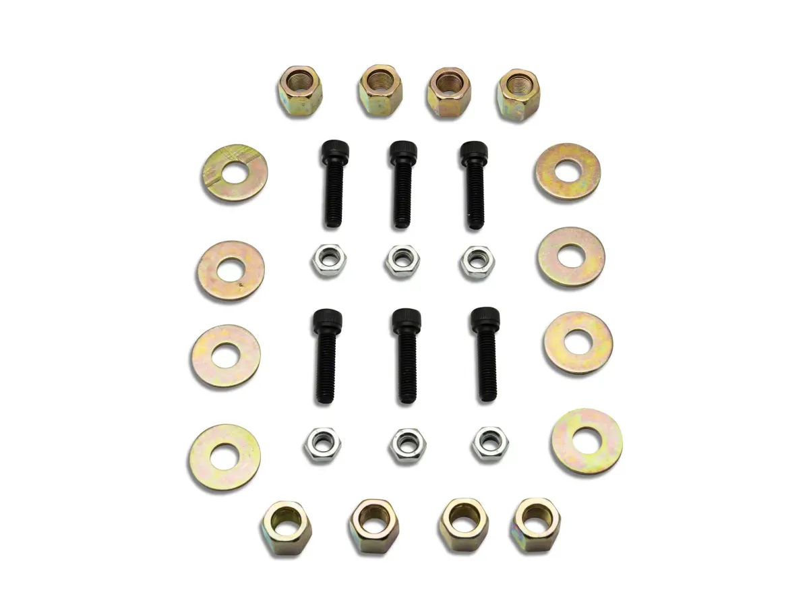
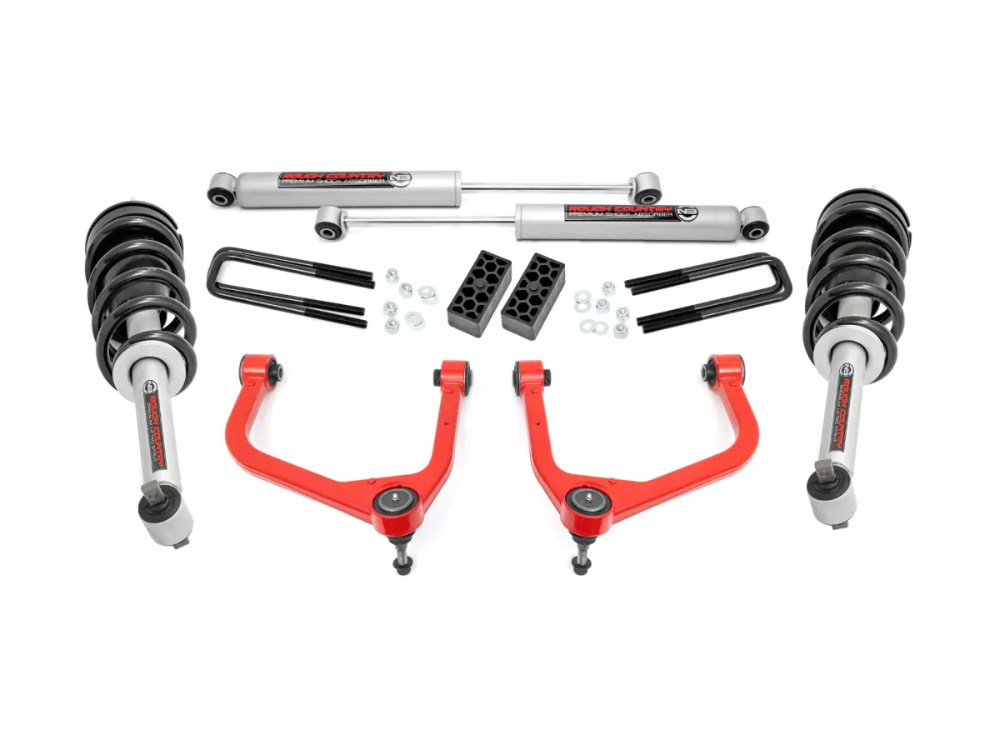
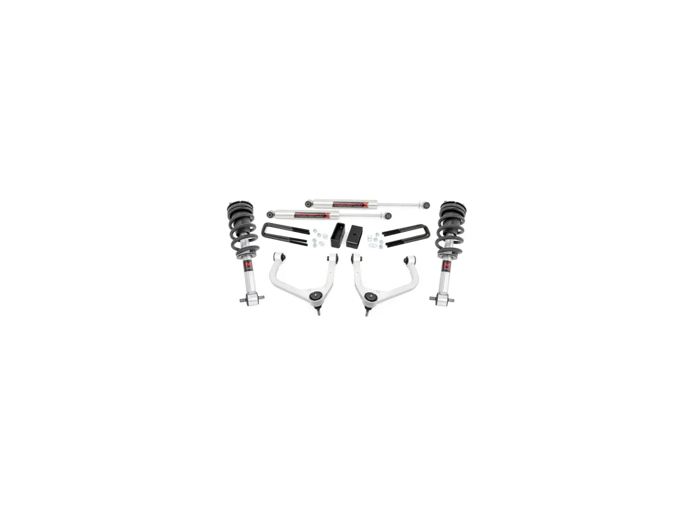

Suspension Upgrades: Springs, Coilovers, and Why Cheap Kits Ruin Cars
Lowering springs are one of the cheapest modifications you can buy and one of the easiest ways to make a car worse. This guide covers what each option actually does, so you can decide whether you're buying handling, stance, or neither.

Lowering springs are one of the cheapest modifications you can buy and one of the easiest ways to make a car worse. This guide covers what each option actually does, so you can decide whether you’re buying handling, stance, or neither.
What suspension does besides holding the car up
Four jobs, and aftermarket parts usually improve one at the expense of the others:
- Support vehicle weight (springs).
- Control the spring’s motion (dampers/shocks).
- Maintain tire contact with the road over bumps and load changes.
- Control geometry: camber, caster, toe and roll center as the suspension moves.
A spring’s job is job 1. The damper’s job is jobs 2 and 3. If you lower the car with springs and keep stock dampers, you’ve changed the spring rate without changing the damping to match. The damper is now under-damped for the stiffer spring and over-worked because it has less travel. That’s the mechanical reason cheap lowering springs feel bad.

The options, ranked by what you get
Lowering springs only. Cheapest. Lowers ride height and usually increases spring rate. Problems: stock dampers are mismatched, and you lose suspension travel. On a car with limited travel, you’ll be into the bump stops constantly, which feels harsh and reduces grip over uneven surfaces. Also changes camber, which increases inner-tire wear if you don’t get an alignment with camber correction.
Springs plus matched dampers. The correct budget approach. Same lowering, but with damping calibrated for the new spring rate. Rides better than springs alone, often better than stock in body control. This is the sweet spot for a street car where you want a modest drop without spending coilover money.
Coilovers (height-adjustable). A matched spring-and-damper unit with adjustable perch height. Real advantages: you can corner-balance the car, set ride height independently, and on good units adjust damping. Real disadvantages: cheap coilovers are often worse than a good spring-and-damper combo — the damping quality is where the money goes, and budget units cut it. Also: many “adjustable” budget coilovers have damping adjusters that do very little, and height adjustment that changes preload rather than travel, which is the wrong way to lower a car.
Air suspension. Height on demand, excellent load-leveling for trucks, and comfortable. Expensive, complex, adds weight, and adds failure points. Excellent for trucks that tow and want stance; unnecessary for a sports car.
Full coilover with proper valving and separate height/preload adjustment. This is what you’re actually paying for at the top end: correct damping curves, independent height and preload, and quality seals that don’t blow in two years.

Geometry is the part people skip
Lowering a car changes its alignment. Specifically:
- Camber goes more negative as you lower a car with a double-wishbone or strut suspension. Some is good for cornering; too much wears the inside of the tire and reduces straight-line grip.
- Toe changes, and incorrect toe is the fastest way to destroy tires.
- Roll center drops, sometimes below ground level, which increases body roll even though the car is lower and stiffer. It’s the counterintuitive result people feel and can’t explain.
- Bump steer can appear if the tie rod geometry is now wrong.
After any ride height change: get an alignment, with camber and caster correction if the platform supports it. Budget for camber plates or adjustable arms if needed. Skipping this is not saving money, it’s buying tires.

Matching spring rate to use
Spring rate is measured in lb/in (or kg/mm). Stiffer is not better; appropriate is better.
- Street: modest increase over stock. Enough to reduce roll, not enough to make expansion joints feel like impacts.
- Street plus occasional track: higher rate, matched damping, and stiffer anti-roll bars to control roll without going extreme on springs.
- Track: high rates, but note that a stiff spring on a bumpy track is slower than a softer one that keeps the tire loaded.
Anti-roll bars are the underrated tool: they reduce body roll without reducing ride quality in a straight line, because a bar only acts when the two sides move differently. Fitting a bigger rear bar is often a better first step than stiffer springs.

Trucks and SUVs are different
On a truck, “suspension upgrade” usually means one of three things and they’re not interchangeable:
A leveling kit raises the front to match the rear. It is a stance change and buys you almost no capability.
A lift raises both ends for clearance, and it needs geometry correction — upper control arms, sometimes a differential drop or carrier bearing shim. Skip that and you eat CV joints and get an alignment you can’t fix.
Load support means air bags or helper springs, for towing. Stability and safety improve when loaded; nothing changes when the truck is empty.
If you tow, load support is the upgrade that improves your driving. If you want clearance, lift properly. Don’t lift a towing truck for looks and expect it to tow better. It will tow worse.
Buying by use
- Budget-limited street car: matched spring and damper kit, then an alignment. Don’t buy the cheapest coilovers.
- Serious about handling: good coilovers with real valving, plus anti-roll bars, plus a corner balance and alignment from someone who knows your platform.
- Truck that tows: air bags. Truck that needs clearance: a proper lift with geometry correction.
- Never: cut springs, or fit lowering springs and skip the alignment.
Whatever you buy, budget the alignment as part of the purchase price. It’s not optional and it’s not a detail.
Three ways to spend the money
Prices and review counts as the listings showed them on 4 November 2026. These sit in ascending order of how much geometry correction you get for the money, which is the axis that separates a shortcut from a proper job.

Mammoth 3-Inch Front / 2-Inch Rear Leveling Kit (07–18 Silverado 1500)
Spacers, front and rear, at a price that reflects what they are: blocks that add height without correcting anything. 136 reviews is a substantial evidence base for a part this simple, and it is the cheapest way to a lifted stance on the earlier truck.
This is the option this article would tell you to be honest with yourself about. If the goal is the look and the truck is a pavement machine, buy it and get an alignment. If the goal is anything else, the next card is where you should be looking.
The reviews make that argument better than this page can, because the failures they describe are exactly the ones the section above predicts. 136 ratings at 4.65 — 76% five stars, but 2.9% at three, 1.5% at two and 1.5% at one. Those low ones are not about ride quality or finish. They are about geometry. "If u have a 2011 Chevy Silverado you will not be able to get the camber back to spec and will wear your tires pretty fast unfortunately 3 inches for the [...]" That is a truck, an alignment rack and a set of tires, which is the arithmetic this guide keeps pointing at.
Two further complaints are worth knowing before you open the box. One owner found hardware missing: "there is missing 2 nuts and 4 washers for the rear U bolts" — check the bag against the parts list before you start, not after the truck is on stands. And the most serious, twice over, is the differential drop: "The materials used are good quality, but the fact that this kit does NOT include a differential drop makes it dangerous to use." A spacer kit at this price does not include one, and on a truck that will see load or dirt that is a real omission rather than a missing convenience.
- Price
- $139.99
- Fitment
- 2007–2018, Silverado 1500
- Lift
- 3 in front / 2 in rear
- Geometry correction
- None — spacers only
- Owner reviews
- 136
See the Mammoth leveling kit → list price checked 4 Nov 2026

Rough Country 3.50-Inch Lift Kit with Forged Upper Control Arms, N3 Struts and Shocks (19–24 Silverado 1500)
This is the pick because the forged upper control arms are the point. A lift changes where the suspension sits in its travel, and the arms are what bring the alignment back into a range the truck can actually work with. It is also a complete kit — struts and rear shocks included — rather than spacers stacked onto worn dampers.
479 reviews is the deepest evidence base of anything in this article, which matters more on suspension than on almost any other part: the failure mode here is not a bad finish, it is a truck that drives badly.
- Price
- $939.95
- Fitment
- 2019–2024, 4.3L / 5.3L / 6.2L Silverado 1500
- Lift
- 3.50 in
- Includes
- Forged UCAs, N3 struts, N3 shocks
- Owner reviews
- 479
See the Rough Country kit → list price checked 4 Nov 2026

Rough Country 3.50-Inch Lift Kit with M1 Struts and M1 Monotube Shocks (19–24 Silverado 1500)
The same kit stepped up to monotube shocks. If the first card is "fix the geometry", this one is "fix the geometry and the damping". Monotube shocks hold their behaviour better under sustained work, which is the difference you feel on a loaded truck over a bad road rather than on a smooth one.
$230 more than the N3 version. Whether that is worth it depends entirely on whether the truck works for a living. If it commutes, the N3 kit above is the better use of the money.
- Price
- $1,169.95
- Fitment
- 2019–2024, Silverado 1500 w/ multi-leaf springs
- Lift
- 3.50 in
- Includes
- Forged UCAs, M1 struts, M1 monotube shocks
- Owner reviews
- 479
See the Rough Country M1 kit → list price checked 4 Nov 2026
No ride, handling or alignment measurements were taken on any of these kits. Lift heights are the manufacturers' claims. The geometry argument above describes what these parts are designed to do; it is not a measured result.
Note that all three of these alter ride height, which affects headlight aim and can affect inspection in some jurisdictions. Budget an alignment at the same time as the kit, as above.
Topics
- Suspension
- Rough Country
- Mammoth
- Silverado 1500
- 5.3L
- 6.2L
- 4.3L